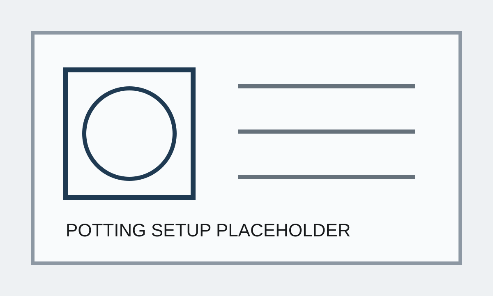
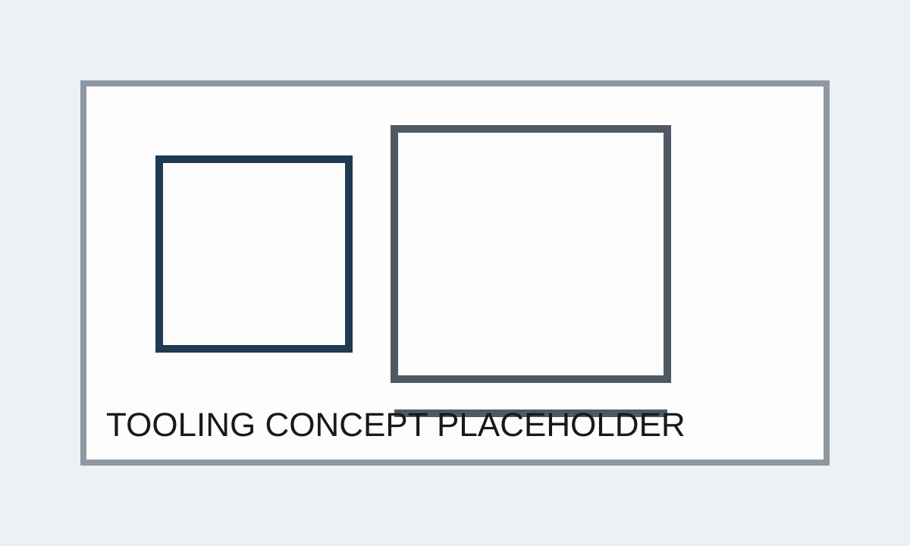
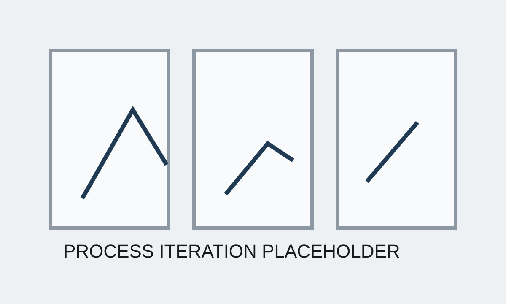

Case Study 01
Motor Stator Potting Process Development
Challenged assumptions around motor thermal management and developed an in-house vacuum stator potting process for high-power electric motors, including custom tooling and internal prototype manufacturing capability. Achieved approximately 80-90% fill rates supporting 500+ hour endurance testing.
Short Summary
Challenged assumptions around motor thermal management and developed an in-house vacuum stator potting process for high-power electric motors, including custom tooling and internal prototype manufacturing capability. Achieved approximately 80-90% fill rates supporting 500+ hour endurance testing.
The Problem
Motor performance depended on achieving consistent, high-quality resin fill in a geometry prone to air entrapment. The existing assumption was that to use high thermally conductive resin, it required specialized external processes, creating slow iteration cycles and limiting internal development capability.
Constraints
- High-viscosity resin and significant air entrapment risk
- No internal process history for this application
- Prototype equipment limitations and evolving tooling concepts
- Need to move quickly enough to support motor endurance testing timelines
My Approach
- Started from first principles by questioning whether external potting processes were necessary
- Reduced the problem to core physical constraints (flow behavior, wetting, air entrapment)
- Designed custom tooling to improve control and repeatability while eliminating unnecessary process complexity
- Built a vacuum potting setup for internal prototype use
- Ran iterative trials to study fill behavior, defects, and practical operating limits
What I Built
- Internal vacuum potting equipment for prototype production
- Custom tooling concepts to support part handling and process control
- Defined process parameters and a scale-up path toward automated production
Results
- Established internal prototype capability for stator potting with high thermal conductivity resin
- Achieved approximately 80-90% fill rates in development testing
- Supported 500+ hour endurance testing with stable thermal performance
What Went Wrong / Iterations
Early iterations assumed that vacuum and geometric access alone would ensure acceptable fill quality. In practice, small process variables dominated outcomes, forcing simplification of the process and tighter control of critical variables rather than adding complexity. Specifically, timing and viscosity management were difficult to master and took iterative tests to build the process.
What I'd Do Next
The next step would be a formal design of experiments around fill performance, defect rate, and cycle time, followed by transfer into a production-ready automated process.
Images



Confidentiality Note
Details and visuals have been simplified to respect confidentiality while preserving the technical approach.